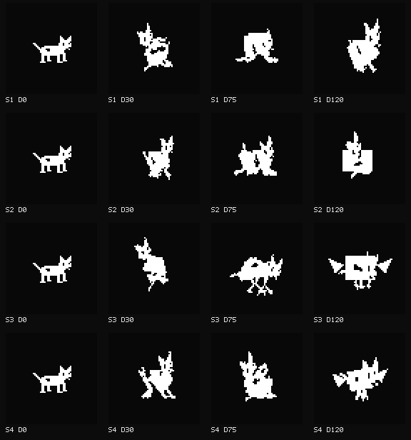
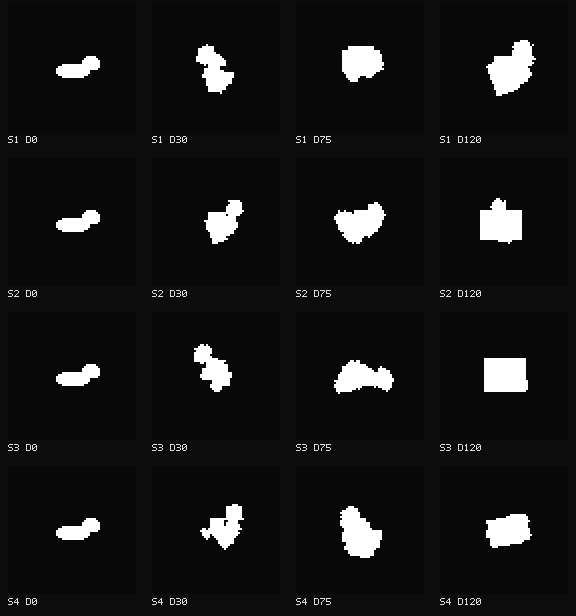
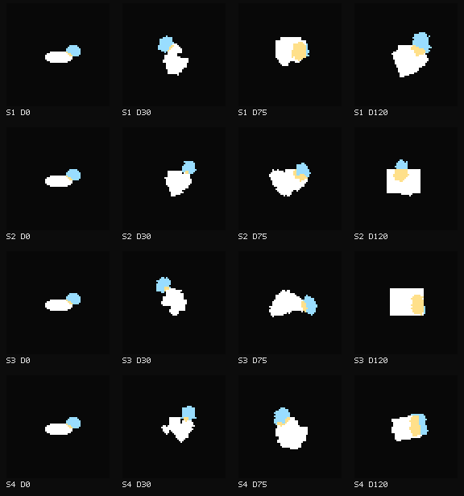

PROVISIONAL CANDIDATE — HUMAN BENCHMARK REVIEW PENDING. v7 still mostly looks like stretching; the user wants meaningful stage metamorphosis, with optional cocoon lineages.
Cub · four fixed unfiltered raw seeds · columns0/30/75/120 · neutral care · idle/time0. This directory is overwritten by the next preview command. No automatic scores.
Actual frame/genome/development diagnostics


Head blue; trunk white; enclosure purple; head/trunk overlap yellow. Projected occupancy, not physical mass.
